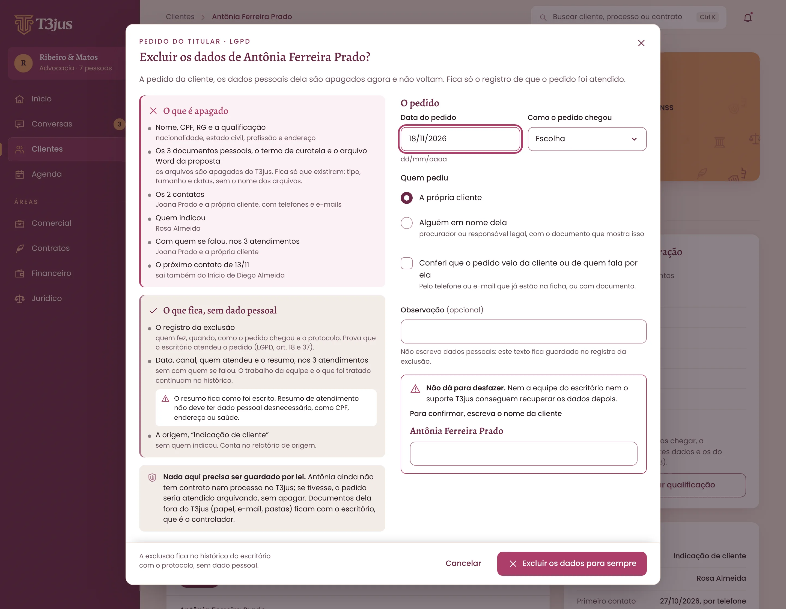

Cliente sem nada importado
Nada muda. A janela é a de hoje (a aprovada da F3.156), letra por letra; o gerador confere em todos os estados aprovados de despesa.
Abrir: exclusao.html?estado=historico-nenhum (estreite a janela para ver o celular)